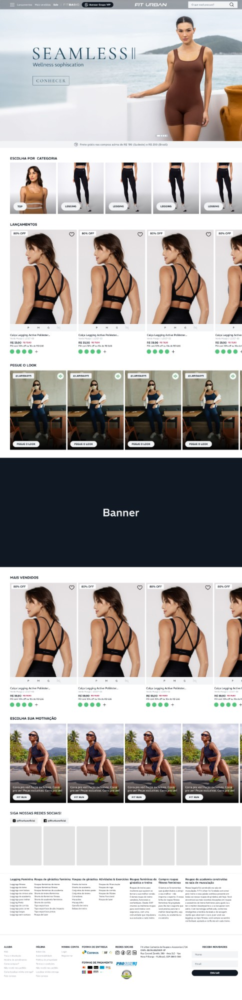
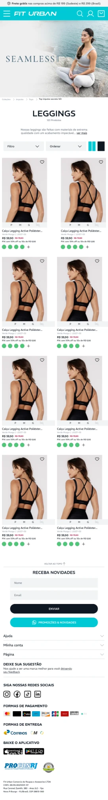
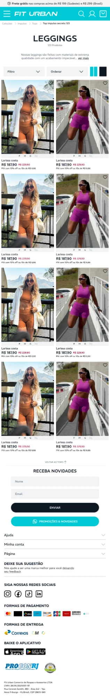
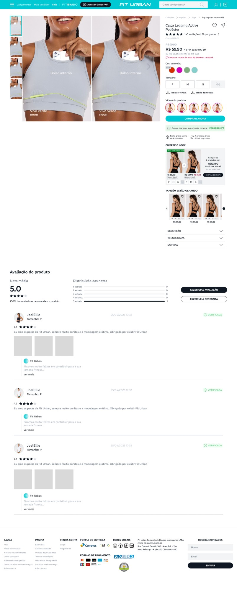
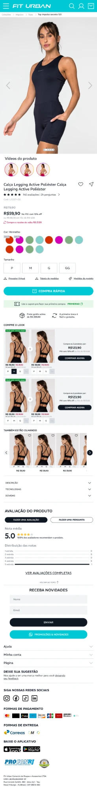
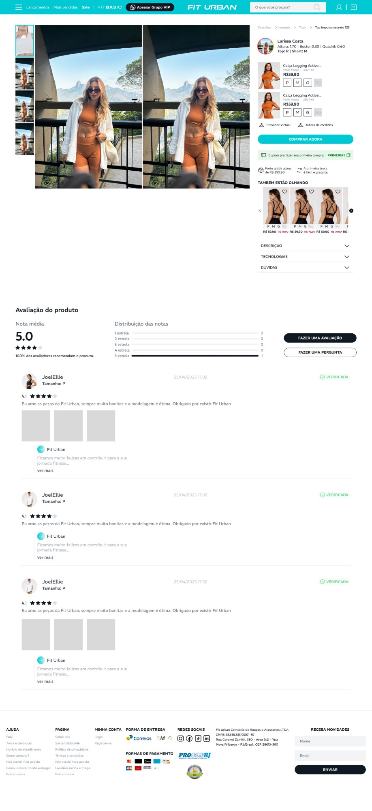
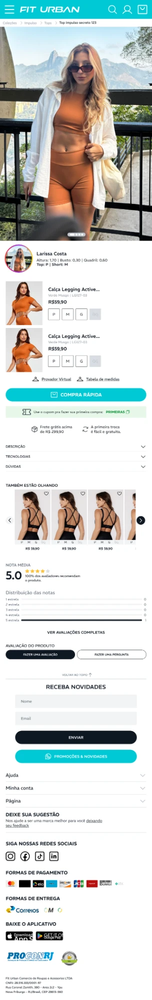

Fit Urban
Redesenhei o site da Fit Urban, e-commerce de moda fitness: da pesquisa com usuários ao design system e às telas, validadas em testes.
Figma
Ver o site no ar
Página inicial
Campanha no topo, seguida de categorias, lançamentos, looks de influenciadoras, mais vendidos e redes sociais.
Role dentro das telas para ver a página inteira.

Categoria
Lista de produtos com filtro, ordenação e troca de visualização. Uma versão mostra os looks completos das influenciadoras, com o preço do conjunto.


Produto
Fotos lado a lado, cor e tamanho, vídeos do produto, compre o look, sugestões e avaliações.


Look da influenciadora
Uma versão da página de produto mostra quem está usando o look, com altura, medidas e tamanho, e as peças para comprar juntas.

